珍寺大道場 九州編
福岡県
珍寺大道場 九州編
福岡県
老若男女よ！願え！願え！願い倒せえ〜！
小さなお堂に人々の鬼気迫る願いが濃縮！
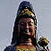＃140 香山昇竜大観音
山の上に立つブロンズ仏の里
＃099 福岡大仏
ハク付きまくり寺院の最終兵器！これでトドメだぁ〜
インド中国なんでもござれの宝石大好きハイブリッド寺院
＃040 南蔵院
巨大寝釈迦のプリクラ、饅頭、キーホルダー・・・
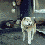＃039 ゴンタローの家お犬様に仕える召使がつくった哀愁の露天祭壇
佐賀県
様々な信仰が渾然一体となった濃すぎる寺の濃すぎる信仰
ナゾのコンクリ仏師が急浮上してきたぞお〜
コンクリ仏の歴史に残る記念碑的作品！
リアル「塗り仏の宴」…あ、「塗られ仏」でした…
＃043 鶴の岩屋
驚愕の修行窟
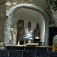＃042 コンクリ彫刻師の家武雄に突如亀甲墓が出現、か？
長崎県
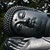＃257 江東寺
地味な寝釈迦さんに隠された意外な事実！
＃256 照龍寺
人間の厄も自然の災厄も被りまくり。ご苦労様です。
討ち死に覚悟の旅の果てに生まれた奇跡の結晶！
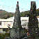＃183 三角形の墓
ゆうもあ的人生の最終ギャグ
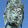＃182 生月大魚藍観音
座像だとばっかり思ってたのに・・・
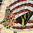＃181 山田教会
最果ての教会にあった驚きの装飾！
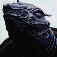＃069 長崎観音
親亀の上に観音乗せて〜♪
メリーゴーランドの向こうには大観音が。シュール。
大分県
お願い書き込み掲示板「祈願文」の濃すぎる世界！
「九州一の霊場」の真相や如何に！
スペース”ブッダ☆ファンタジ−”観音！
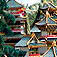＃155 長洲の精霊送り
あまりにもアグレッシブな盆行事に仏さんもビックリ！
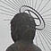＃142 金龍地獄大仏とスギノイパレス
昭和の温泉文化を詰め込んだ温泉街にある大仏
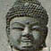＃141 別府大仏
日本で二番目に出来たコンクリ大仏！
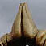＃139 善徳院
珍寺係数マキシマム！世界が羨む合掌ゲート！
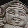＃138 功徳院
大分石仏界のニューフェース！目指せ500年後の重要文化財！
六郷満山仏教の地に咲いた現代のプチ仏教パラダイス
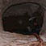＃136 桂昌寺跡地獄極楽
地獄より恐い極楽
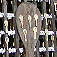＃135 羅漢寺
謎のからくり迷路としゃもじ
熊本県
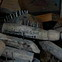＃262 弓削神社/熊本県
積み上げられた無数のクギチン、クギマンに人間の業の深さを思う
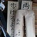＃261 足手荒神/熊本県
無数の手形足形に込められた深刻で真剣な願いに圧倒される
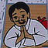＃260 粟嶋神社
あまりにも小さすぎるミニ鳥居！潜れるのか?
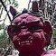＃259 清水滝
美しすぎる滝の隣にある不思議すぎる象さん！
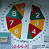＃258 宝来宝来神社
火の国に新たに生まれた脳内マグマの大噴火！
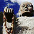＃101 日輪寺
ツツジの名所、赤穂浪士の遺髪、そして大仏・・・
＃100 大仏銀座！小岱山

〜荒尾大師 蓮華院誕生寺奥の院 大釈迦座像〜
大仏多発地帯に生息する3つの大仏物語!
宮崎県
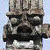＃185 高鍋大師
石に刻まれた超高濃度な人生の痕跡を見よ！
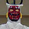＃179 弥五郎どん伝説
南九州の反骨精神の象徴、弥五郎どんを追う！
南国のペインテッドゴッドは多種多様
鹿児島県
南九州の反骨精神の象徴、弥五郎どんを追う！
九州最南端の地に花咲く謎のトンデモ幻想帝国
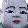＃118 大国寺
珍寺リーサルウェポン！我が約束の地なり！
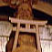＃117 最福寺
日本一！木像弁天像！
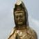＃116 谷山の大観音
一切が謎の純大観音！
沖縄県
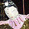＃203 喜宝院蒐集館
日本最南端のお寺の摩訶不思議な佇まい
与那国にある広大な死者の街。そして・・・
歌って踊って！楽しすぎるぞ！八重山のお盆！
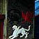＃132 名護の亀甲墓
ただでさえ強烈な亀甲墓なのに・・・
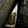＃093 斎場御獄
琉球王朝最高のスピリチュアルスポット！
珍寺大道場 HOME
 ＃217 お願い絵馬〜飛来神社、吉塚地蔵、旭地蔵尊
＃217 お願い絵馬〜飛来神社、吉塚地蔵、旭地蔵尊